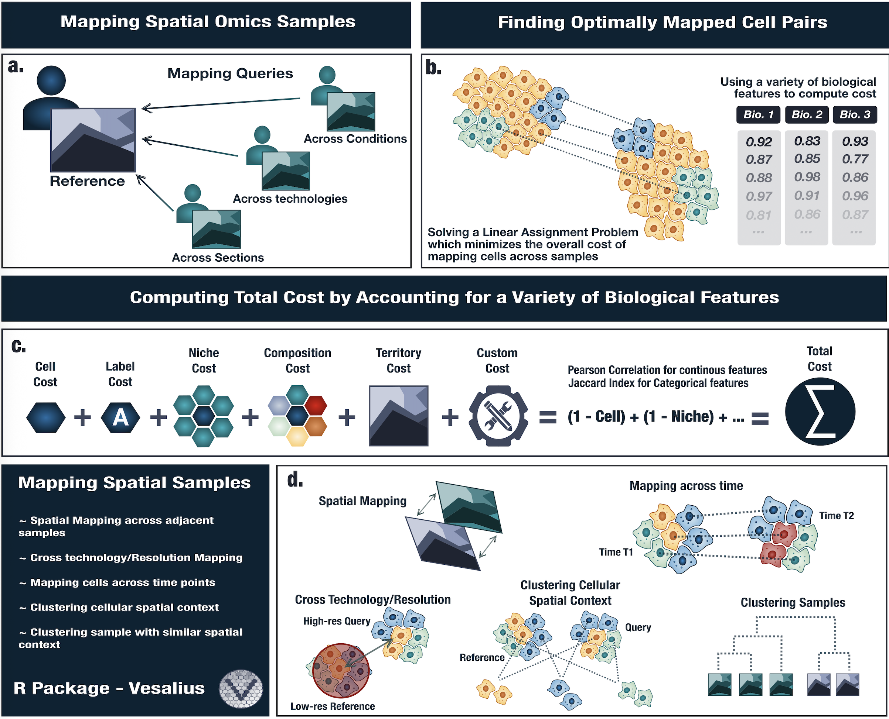

Welcome to the Vesalius GitHub page! 
What is Vesalius ?
Vesalius is an R package to decipher tissue anatomy by embracing various image analysis techniques for high-resolution ST data. Vesalius identifies spatially expressed genes linked to the morphology of tissue structures.
How to install Vesalius?
Vesalius requires R 4.0.0 or higher. The list of dependencies can be found in the DESCRIPTION FILE.
If you do not have devtools already installed, please do so beforehand.
install.packages("devtools")Ensure that the library has been loaded
library(devtools)Install Vesalius via GitHub
install_github("WonLab-CS/Vesalius")How to use Vesalius?
Vesalius provides an internal data set taken from real Spatial Transcriptomic data. This can be used as a dummy data set to get a feel for the Vesalius workflow. The run time on this data sets should not exceed a minute.
The “Quick Start” guide can be found here
Further in depth examples can be found in the Vesalius Analysis Page
Vesalius has been tested on:
- macOS Sequoia 15.0
- Red Hat Enterprise Linux 8.5 (Ootpa)
Contributing
New interoperablity functions will be added in the near future. Other from these quality-of-life functions, no other active development projects are planned.
If you have any feature you would like to add, please feel free to open a Pull request. The package is still actively maintained.
To faciliate contribution, we recommend using Nix to set up a stable development environment. You can download Nix here. Note that Nix does not run on Windows; you will need to use the Windows Linux Subsytem (WLS) to run nix. Make sure to enable Nix Flakes.
Once you have Nix installed, clone the current repository and run:
cd vesalius
nix developNix will derive a reproducible shell environment in which you can proceed with any development you wish.
==NOTE: Nix is a purely function package manager.== As such, to add new packages, you will need to modify the nix flake by adding your desired package to the rPackages list. GitHub packages will need to be added seperately.
Before any pull request, please make sure that your features are covered by the appropriate unit test, are documented using roxygen2 style comments, and that R CMD build and R CMD check pass with no warnings or errors. Pull requests will trigger a GitHub R CMD check but we would like to minimize the number of times this is triggered.
Issues
Please open a GitHub issue or send an email to Patrick Martin (Patrick.Martin@cshs.org)